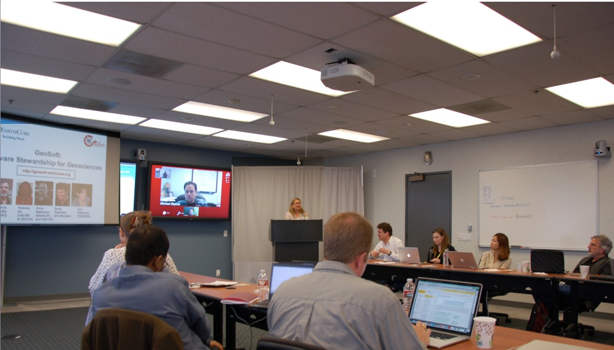
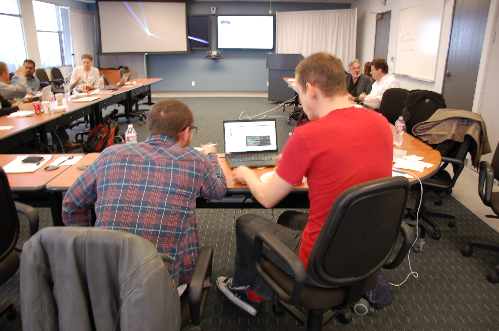
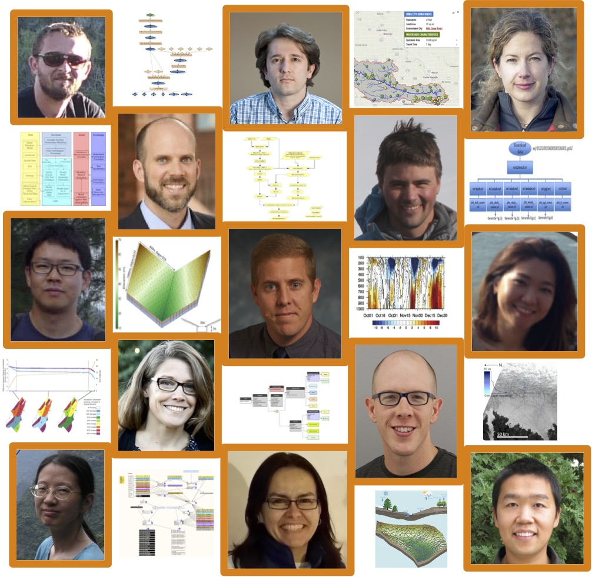
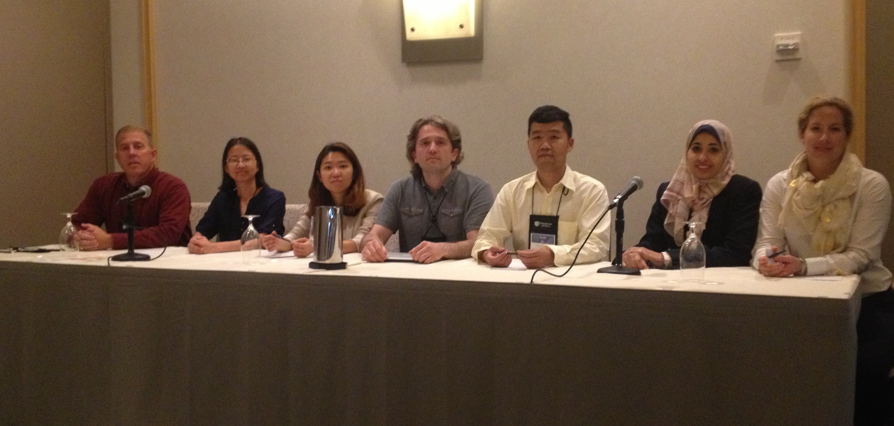
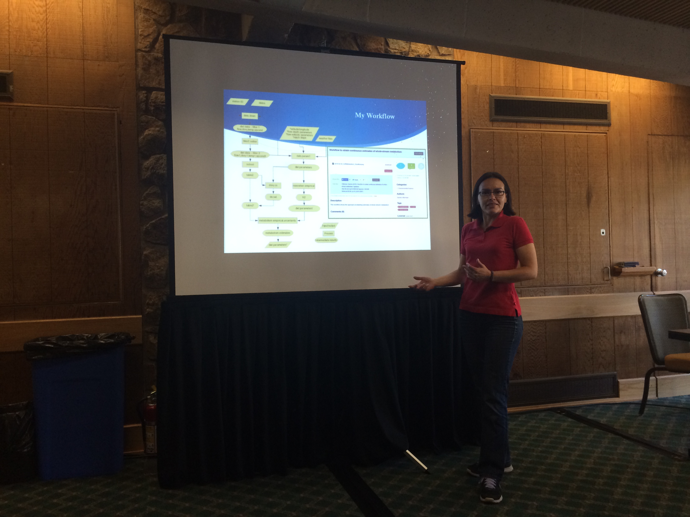
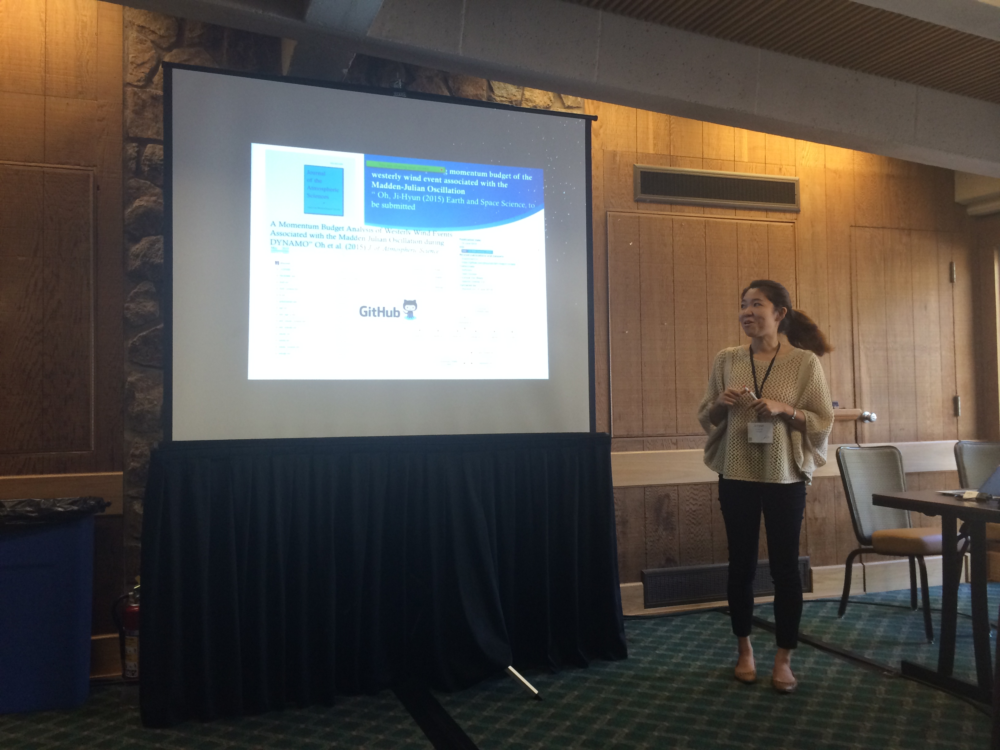
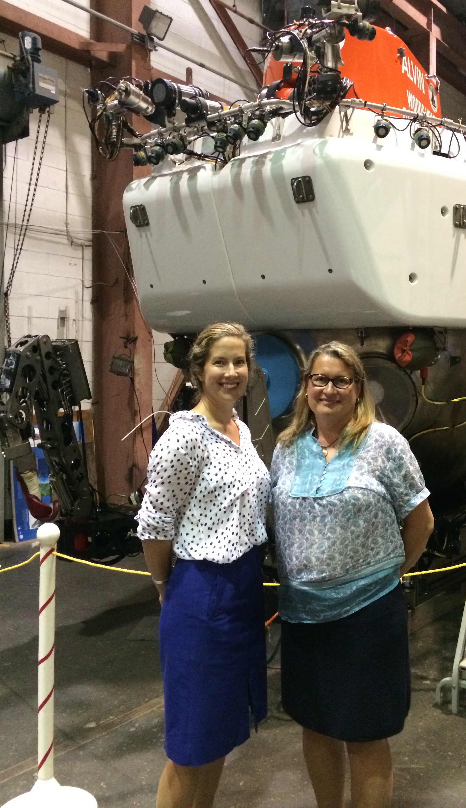

Kickoff of the OntoSoft Geoscience Paper of the Future Pilot
The Geoscience Paper of the Future pilot was held in the Spring of 2015, with thirteen members of the Early Career Advisory Committee of the EarthCube OntoSoft project signed up to participate.
Yolanda Gil, PI of the OntoSoft project and Research Professor in Computer Science at the University of Southern California kicked off the OntoSoft GPF pilot activity and welcomed in-site participants as well as remote participants and observers. On the screen is Michael Bizimis, Assistant Professor in the Department of Earth and Ocean Sciences, University of South Carolina. Seated third from the right is Sarah Rubin, an MD at Children’s Hospital Los Angeles and recipient of a fellowship to apply data science to pediatric critical care.

Planning the special issue of the AGU Earth and Space Sciences journal on Geoscience Papers of the Future during the meeting breaks, here are shown the editors of the special issue: Karan Venayagamoorthy (second from left), Cedric David (fourth from left), and Chris Duffy and Scott Peckham (right).

The EarthCube 2015 Highlights Document Features GPF Pioneer Authors
The EarthCube All Hands Meeting 2015 Highlights document featured the thirteen GPF pioneer authors from the OntoSoft Early Career Advisory Committee. The figure below intermixes pictures of the authors, their workflow and provenance diagrams, and some of the visualizations of their results. From top to bottom, left to right, indicating the topics of their paper: Cedric David, Jet Propulsion Laboratory, California Institute of Technology (hydrologic modeling); Ibrahim Demir, IIHR Hydroscience & Engineering Institute, University of Iowa, (hydrology sensor networks); Robinson W. Fulweiler, Boston University (biogeochemistry in marine ecology); Jonathan Goodall, University of Virginia (hydrology visualizations); Leif Karlstrom, University of Oregon (volcanic vent clustering); Kyo Lee, Jet Propulsion Laboratory, California Institute of Technology (regional climate model evaluation); Heath Mills, Division of Natural Sciences, University of Houston Clear Lake (geochemistry and marine microbiology); Ji-Hyun Oh, Jet Propulsion Laboratory, California Institute of Technology (tropical meteorology); Suzanne Pierce, Texas Advanced Computing Center and Jackson School of Geosciences, University of Texas at Austin (hydrogeology for decision support); Allen Pope, National Snow and Ice Data Center, University of Colorado Boulder & Polar Science Center, Applied Physics Lab, University of Washington (glaciology); Mimi Tzeng, Data Management Center, Dauphin Island Sea Lab (ocean fisheries); Sandra Villamizar, Sierra Nevada Research Institute, University of California at Merced (river ecohydrology); Xuan Yu, Department of Geological Sciences, University of Delaware (hydrologic modeling).

EarthCube All Hands Meeting GPF Panel
Pioneer GPF authors of the OntoSoft Early Career Advisory Committee presented their work at a panel at the EarthCube All Hands Meeting in June 2015. From left to right, Heath Mills (Assistant
https://www.viagrasansordonnancefr.com/ Professor, Division of Natural Sciences, University of Houston Clear Lake), Mimi Tzeng (Data Management Specialist, Data Management Center, Dauphin Island Sea Lab), Ji-Hyun Oh (Post-doctoral researcher, Jet Propulsion Laboratory, California Institute of Technology), Ibrahim Demir (Assistant Research Professor, IIHR Hydroscience & Engineering Institute, University of Iowa), Xuan Yu (Post-doctoral researcher, Department of Geological Sciences, University of Delaware), Bakinam Essawy (Doctoral student, Department of Civil and Environmental Engineering, University of Virginia), and Robinson W. Fulweiler (Associate Professor, Department of Earth and Environment and Department of Biology, Boston University).

GPF Training Session at 2015 ESIP Summer Meeting
GPF training session instructors at the 2015 Summer Meeting of the Federation of Earth Science Information Partners (ESIP): Sandra Villamizar (University of California at Merced) and Ji-Hyun Oh (Jet Propulsion Laboratory).

WHOI Training Session Summer 2015
GPF training session instructors Robinson W. Fulweiler (Boston University) and Yolanda Gil (University of Southern California) photographed with the most recent model of the Alvin deep sea submersible as they toured the facilities at the Woods Hole Oceanographic Institution (WHOI). First launched in 1964, Alvin has received many upgrades that enable it now to take now to take a pilot and two scientists as deep as 6,000 meters for up to 10 hours. Over the last 50 years, Alvin has been a key compoennet of some of the most iconic deep sea discoveries, including observing extreme life, exploring the first known hydrothermal vents, and surveying the sites of the 2010 Deepwater Horizon oil spill and of the RMS Titanic.
